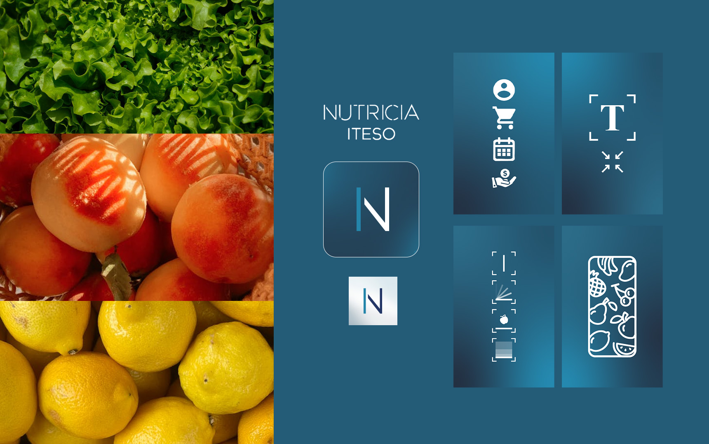
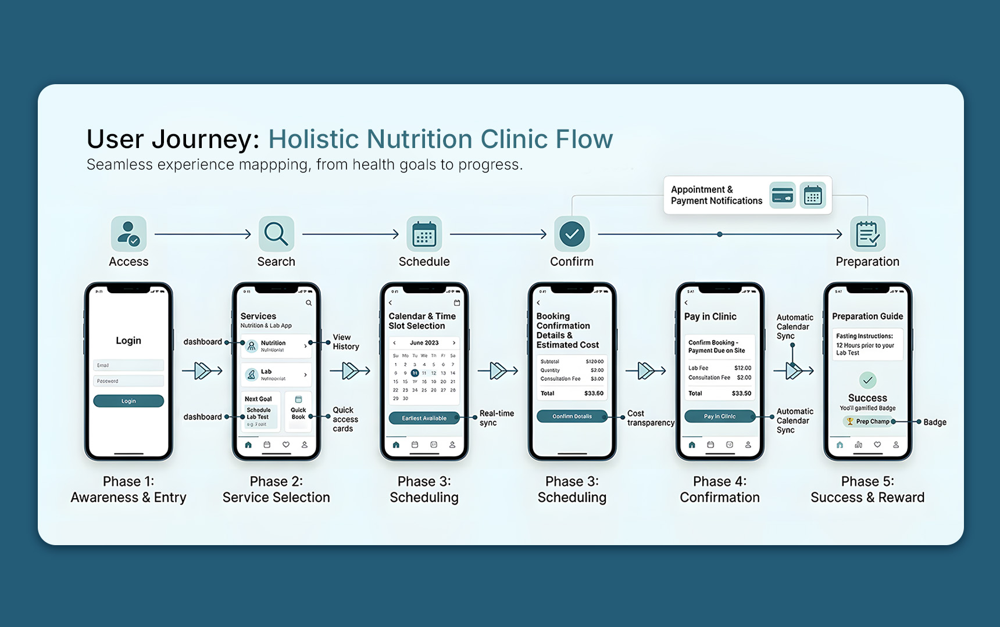
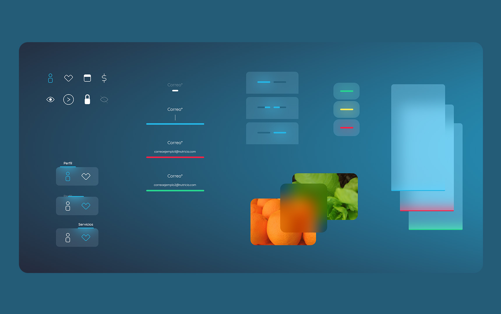
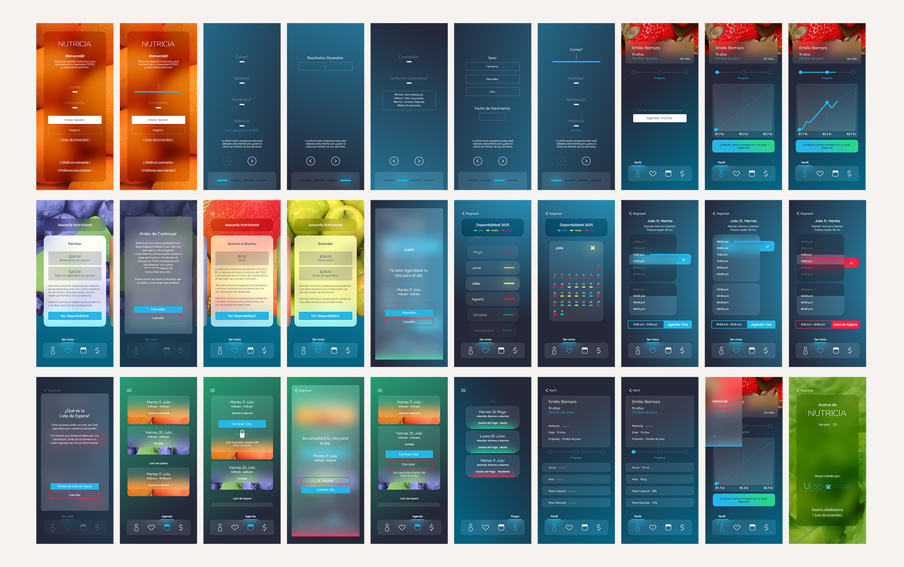

Nutricia
Mobile App
Saved the best for last? I appreciate your thorough
review of my work.
...
Nutricia is a nutrition clinic located on the ITESO University campus,
providing specialized services and benefits to the student community. When I took over the project,
the clinic relied on an external application for patient follow-ups, which severely restricted
client interactions and service management. Furthermore, their appointment scheduling was handled
entirely through email requests, creating a cumbersome and inefficient process for both the staff
and the clients.
Nutricia is a nutrition clinic located on the
ITESO University campus, providing specialized services and benefits to the student community. When
I took over the project, the clinic relied on an external application for patient follow-ups, which
severely restricted client interactions and service management. Furthermore, their appointment
scheduling was handled entirely through email requests, creating a cumbersome and inefficient
process for both the staff and the clients.
Great choice to start with.
...
Year: 2022-2023
Skills: UX/UI
Design, Product Design, User Journeys, Branding, Storytelling
Role: UX/UI Designer
Year:
2022-2023
Skills: UX/UI
Design, Product Design, User Journeys, Branding, Storytelling
Role: UX/UI Designer
(The following video provides an illustrative introduction to the
project)
By utilizing the horizontal line as a core motif, the application communicates transition, process, and consistency. Everything in the design parts from this line as the primary narrative element, serving as the foundation for navigation, interaction, and information hierarchy. To elevate the minimalist framework, I replaced solid backgrounds with vibrant imagery of fruits and vegetables, creating a rich contrast against the clean, compressed typography and icons layered over gradients and transparencies.



I implemented a pre-consultation registration flow that integrates student ID verification to unlock
campus-specific benefits. Within the app, the architecture is organized into distinct sections: a
personalized progress dashboard with dynamic scheduling prompts, a service directory with real-time
availability, and a comprehensive log for tracking appointment agendas and payment history.
To resolve scheduling conflicts caused by frequent cancellations, I integrated a "Waiting List"
mechanic. This feature allows users to register for unavailable time slots; if a slot opens up, the
system automatically reallocates the space. This automation ensures the clinic’s schedule remains
optimized while providing users with immediate access to newly freed appointments.
